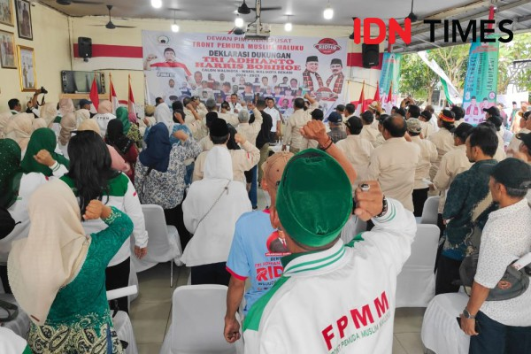

Bawaslu DKI Panggil Fahira Idris Buntut Pernyataan Suswono soal Janda
Prabowo Disebut Akan Bertemu dengan Presiden Terpilih AS

Pilkada Bekasi, Tokoh Maluku Umar Kei Deklarasi Dukung Tri Adhianto
Berita Lainnya